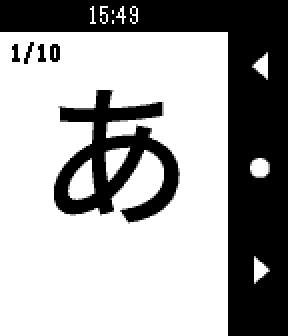

Pebble App Development
What is it?
Pebble was one of the first smartwatches to hit the market back in 2013 after a successful Kickstarter campaign (the most successful ever at the time). However, at the end of 2016, Pebble was acquired by Fitbit who was then bought out by Google, and now they are long gone. Luckily, even though official support for Pebble watches is no more, the Rebble community has stepped up to the plate to keep the watch alive for people still using it. It's an awesome community project that I am quite grateful for as a longtime Pebble user.
One of the best aspects of the Pebble/Rebble ecosystem is all the custom software available. Since its inception, Pebble has always been very developer driven, so anyone is free to make anything they want for the watch and upload it to the store. I’ve had my Pebble for more than 6 years now, and it’s something I use daily. So, if there is anything I feel is lacking, there is nothing stopping me from just making it and uploading it for anyone to use! This page documents some of the things I have made for the platform.
How?
As mentioned, Pebble has been very developer driven from the beginning and as such documentation for everything relating to building software for the watch is available. Since they have been closed, the Rebble community has maintained all the documentation. It’s a bit scattered and has quite a few broken links, but the core functionality remains. Apps for Pebble can either be “watchfaces'' or “watch apps”, both of which are written in C. In addition, you can also use JavaScript to add web content to your application such as showing the weather on a watchface.
Back when Pebble was around, you were able to use a cloud based development environment called CloudPebble. It was very convenient and accessible, however that has since been shut down leaving only the local SDK. For my purposes, I use a Linux Virtual Machine image provided by the Rebble community. It has the SDK alongside some other tools already loaded making it fairly simple to begin programming.
Professor Layton - Mini London
A watch face based on the Professor Layton series of games. As a big fan of the franchise, I felt a watchface was lacking. It's fully customizable and you can choose from 30 characters to appear on the watchface. In addition, there is also a random option that will shuffle through characters based on the time of day or on load.
If you want more information, click here to navigate to the deticated page.


Koishi - Japanese Kana Flashcards
A watchapp that gives you a full set of Japanese Hiragana and Katakana flashcards on your wrist. I made this to accompany my own Japanese study. You can completely customize the deck, including how many cards you want in a deck and which kana will be able to show. There are also presets to help give a starting point to customize the flashcards to your need.
If you want more information, click here to navigate to the deticated page.
